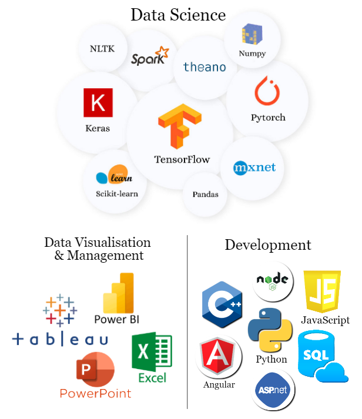
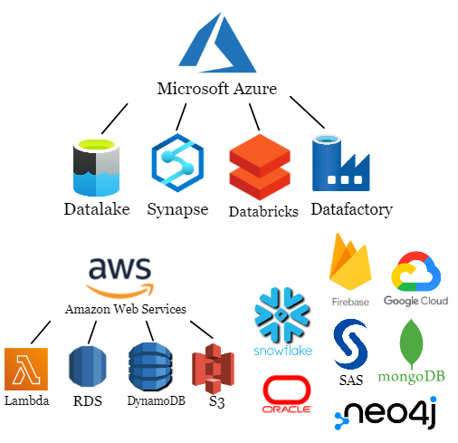
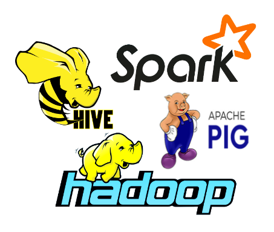

Passionate about driving innovation and solving real-world problems.
Hey! I'm Ansh Dugar, and I'm all about making a real difference through the power of data science and analytics. Recently, I completed my Master’s in Information Systems from the University of Maryland, College Park, where I gained in-depth expertise in data-driven technologies and advanced analytical methodologies.
My career path has been quite the adventure, wearing different hats as an Associate Consultant, Data Analyst, Data Engineer and Data Scientist. But what truly drives me is the opportunity to collaborate with diverse teams and deliver solutions that not only streamline operations but also make users' lives easier.
In the short term, I'm all about rolling up my sleeves and making a big impact right where I am. But looking ahead, my eyes are set on leadership roles where I can drive organizational success and leave a lasting, positive mark on everyone involved.
I'm fueled by curiosity and a passion for growth. Equipped with expertise in data analysis, machine learning, and strategic consulting, I'm eager to dive into projects and drive success for both my team and our organization.
Outside of the nine-to-five, you'll find me chasing new horizons through travel, keeping fit with my love for fitness, and occasionally strategizing my next move on the chessboard. Life's all about balance, right?
Experience
A timeline of my professional growth and learnings.
Data Analyst

- Managed tolling operations for Port Authority's tunnels and bridges, implementing daily system performance checks that maintained a 99.9% uptime rate, resulting in $2 billion in toll revenue and preventing potential revenue losses
- Designed interactive Power BI dashboards for RTCS class override logs and key metrics like tolling revenue and customer satisfaction, leading to a 45% reduction in incorrect toll charges and improving performance tracking by 30%
- Improved strategic decision-making and customer experience by 25% through SQL-driven backend data management and continuous data analysis. Integrated stakeholder feedback into Power BI reports, driving informed business decisions
Associate Consultant
- Engineered a metrics dashboard database schema for an insurance company leveraging SAS, minimizing cost by 70%
- Formulated and unit-tested 3 ETL solutions to load client information into dimension and fact tables using PROC SQL and data warehouse concepts, resulting in a 30% reduction in data errors
- Discovered Data quality issues and updated data streamlining processes, resulting in a 20% redundancy reduction. Additionally, provided insightful dashboards and BI reports boosting operational efficiency by 25% and highlighting essential KPI trends
Data Engineer

- Led the preprocessing and ingestion of raw data through Data Build Tool, leading to the streamlining of data analysis procedures
- Developed and enhanced data pipelines utilizing Snowflake's Snowpipe feature for continuous data loading from AWS S3 buckets, resulting in a 15% reduction in resource usage on AWS
- Utilized Tableau to visually represent data, providing data-driven insights for stakeholders and enabling the creation of precise marketing tactics that played a vital role in achieving a remarkable 15% upsurge in overall sales results
Data Scientist

- Built an Ambulance Tracking system and Automated WhatsApp bot leveraging APIs, Bot Logic, ML, NLP, and multiple information sources to enhance customer engagement, achieving a 38% reduction in response time, and enhancing user experience
- Programmed decision trees and state machines with cross-functional teams, enabling real-time data scraping from databases and external APIs, resulting in a 40% reduction in manual data retrieval time and a 25% increase in data accuracy
- Monitored user interactions, identifying bottlenecks, and continuously improving the bot's performance with Google Analytics
Education
...with an additional degree from Youtube.com
Masters of Science in Information Systems
-
University of Maryland, College Park
August 2023 - December 2024
Coursework:
- Data Processing and Analysis in Python
- Data Science and Predictive Analytics
- Enterprise Cloud Computing and Big Data
- Project Management in Dynamic Environments
- Data Mining and Predictive Analytics
- Business Process Analysis
- Database Management Systems
Graduate Teaching Assistant
MSML604: Introduction to OptimizationUMD – College of Computer, Mathematical, and Natural Sciences.
I tackle optimization problems using awesome math tricks! I learn and assist students in the area of calculus, SVD, transformations, linear algebra, matrix algebra and also explore different methods like steepest descent, Newton's method for basic optimization, linear programming and quadratic programming for more complex problems.
I also lend a helping hand to fellow students to dive into global search methods like simulated annealing, genetic algorithms, and particle swarm optimization. I provide guidance and support at every step and also learn alongside this process!
Bachelors of Technology in Information Technology
- University of Mumbai
June 2018 - May 2022
- Exploratory Data Analytics
- Analysis of Algorithms
- Artificial Intelligence
- Linear Algebra for Machine Learning
- Applied Machine Learning
- Advanced Statistics and Probability
Senior Operations Officer
Computer Society of India (CSI)K.J. Somaiya College of Engineering
Spearheaded technical workshops on Artificial Intelligence, Machine Learning, Fuzzy logic, Django, and Ethical Hacking.
Projects
- Developed an AI-powered medication recommender by fine-tuning OpenAI GPT-3.5 Turbo, leveraging Python, Pandas, and JSONL processing to achieve high accuracy in real-world medical scenarios
- Streamlined clinical workflows through a user-friendly conversational interface, integrating OpenAI APIs, Python libraries, and scalable data structures to enhance decision-making for healthcare providers
- Designed a scalable solution with potential for integration into Electronic Health Records (EHR) systems, supporting multi-language functionality
- Conceptualized and developed an interactive Tableau story to analyze global tech layoffs from 2020 to 2024, leveraging SQL for advanced data preprocessing and transformation to ensure accuracy and consistency across visualizations
- Engineered dynamic, multi-faceted storytelling components, incorporating bar charts, line graphs, heatmaps, and geospatial visualizations to provide an in-depth examination of workforce reductions across industries, regions, and company stages
- Delivered a data-driven narrative that offers actionable insights into workforce trends, enabling stakeholders to uncover critical patterns and make informed strategic decisions within the tech industry
- Geospatial analysis on a dataset of 22 million USA traffic collisions utilizing Python-based clustering techniques and interactive visualizations that influence traffic management strategies
- Risk Assessment from the correlation between various factors fostering informed decision-making for insurance companies regarding potential adjustments to insurance rates for vehicle brands
- Constructed a data pipeline and deployed an XGBoost ML model to predict collision severity with 95.92% accuracy
- Performed data preprocessing and feature engineering on a 1 million row dataset for training and validation of Logistic Regression, Decision Trees, and Random Forest models for crime classification with PySpark
- Modeled advanced NLP techniques, TF-IDF, and vector-count features to uncover hidden patterns and relationships in the dataset, aiding law enforcement agencies in resource allocation and investigation prioritization
- Forecasted interactive data visualizations and implemented cross validation techniques to fine-tune hyperparameters
- Innovated a Machine Learning system using Text detection and NLP enabling automated grading of handwritten answer sheets by comparing them with an ideal answer key
- Employed Google Vision API for obtaining digital text from the handwritten text, reducing errors by 20%
- Used advanced algorithms including BERT, Cosine similarity, and Euclidean distance to accurately assess the similarity between student answers and ideal solutions
- Crafted a project plan to classify images using Euro SAT dataset, using ResNet50 for training, resulting in an accuracy of 95.92%
- Implemented transfer learning to enhance the classification accuracy to an exceptional 97.34%, exceeding industry standards
- Executed a comprehensive data exploration strategy on a 700,000-row dataset to train and validate Logistic Regression, Decision Trees, and Gradient Boost models on preprocessed data to develop a fraudulent transaction detection ML model using Python
- Enforced hyperparameter tuning in model development to increase model accuracy and F1 Score
- Designed a streamlined process for hyperparameter optimization using grid search and Bayesian optimization algorithms
- Conducted data analysis of NYPD complaint database using Naive Bayes, K-Means Clustering, Decision Tree Classifier, Support Vector Machines, and Linear Regression
- Achieved 90% accuracy in crime classification using Naive Bayes, optimizing complaint classification, jurisdiction determination, and crime rate prediction in New York to enhance pattern analysis and prevention strategies
- Intended to educate the masses about Covid-19, mitigating rumors and myths on the pandemic, and acting as a relief for overwhelmed communication systems
- Created a dynamic, real time covid website using APIs for dynamic data collection along with a trained chatbot that provides answers to the usual questions and queries from the users
- Constructed a comprehensive system to prevent drinking and driving incidents
- Combined Arduino UNO, MQ-3 alcohol sensor, heart rate sensor, GPS, and GSM modules to create a device tracking location and alerted users via email or text through a mobile application
- Designed and integrated an LED display equipped with firebase application to enhance the user experience
Skills
and
Areas of Interest
- Data Analytics
- Data Engineer
- Data Science
- Data Architect
- Machine Learning
- Business Analytics and Development
- Consultancy
Technical Skills :

Cloud and Databases :

Big Data Technologies :

Certifications
Certified Genius without the certificate to prove it because brilliance doesn't always come with a certificate.
Leadership and Volunteer Experience
-
Chief of the Debating Society - DebSoc (2022)
- I joined the Debating Society at my university because I love discussing different ideas.
- Over two years, I dedicated myself to refining my skills within the society, immersing myself in the art of debate.
- I orchestrated and supervised numerous debating competitions, ensuring their seamless and equitable execution.
- Together with my team, we proudly represented our college in various nationwide debating tournaments, showcasing our prowess and adaptability across a spectrum of subjects.
- These experiences not only sharpened my own debating techniques but also fostered a comprehensive understanding of different debate formats and topics.
-
Content Head of the Maths Club - Emfinity (2022)
- I jumped into the university's math club driven by my love for the subject and a desire to inject some excitement into it.
- As a member, I took charge of a dynamic team of five individuals.
- Our goal? To revolutionize the perception of math by infusing it with creativity and fun.
- We brainstormed and crafted captivating posts and designs, breathing life into some of the most puzzling and entertaining math problems. It was a fulfilling journey where I not only shared my passion for math but also ignited a spark of curiosity and enthusiasm among my peers.
-
Volunteered at a National NGO - U&I (2020)
- I taught mathematics to underprivileged children and raised $200,000 to improve facilities.
- Other than focusing on academics, I also prioritized students' mental health and well-being.
- I made sure to check in with them about their day and engage in conversations about what's going on in their lives
- I encouraged them to participate in extracurricular activities of their choice to maintain a healthy balance.
-
Led my team for Inter-college Hackathon (2019)
- I spearheaded a team of 8 peers for an Inter-college Hackathon, which attracted participation from over 80 colleges.
- Our team clinched the top position by developing an innovative solution addressing the challenge of finding parking spots.
- With the escalating population and the consequent surge in vehicle usage, the daily hunt for parking spots had become an arduous task. To tackle this issue, we conceptualized and developed an app specifically designed to locate available parking spots efficiently.
- We stood first and I believe that it was a testament to our teamwork, creativity, and dedication to solving real-world problems.
Extra Curriculars
Fitness | Soccer | Travel | Reading | Video Games
- Part of the Cultural Commitee of Mumbai University (2019)
- Part of the Organisation Committee for the Annual Sports festival of Mumbai University (2018)
- Won Handball State Championships playing for Mumbai City (2016)
- Stood 2nd in All India National Chess Championship (2012)